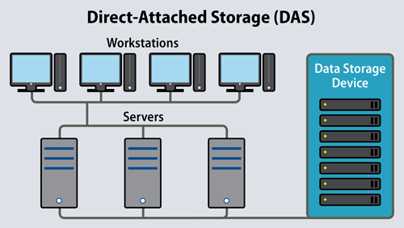

- Serial access: When usiong serial access it is
necessary to start at the beginning of the file and then acccess
each one in turn until each required record is found. It is primarily used on
magnetic tape systems and it is basically a very slow form of data access.
It is used on applications where speed of access or which order the dfata is accessed is not important.
- Direct access: Direct access is used with magnetic disks, optical media and solid state media.
The computer uses the key field to calculate where the data should be stored. It is then able to access
the data directly from the calculated position. This access is much faster than serial access. When updating
files using direct access old files are directly overwritten by new files. With this type of access it is not needed to sort records into order first.
- Secondary storage media: Secondary storage media dates back right to the first releases of the personal computer,
all systems came equipped with some form of secondary storage. When the user loads data into the computer the data is stored temporarily in the RAM.
If the computer is turned off this data would be lost. This is where secondary storage comes in.
- Uses of magnetic storage media: Magnetic storage media depend on the magnetic properties of certain materials.
Magnetic material is coated on the surface of a disk or tape that can be magnetized in suchg a way to represent 1 or 0. Many disk drives are made up of more than one disk.
